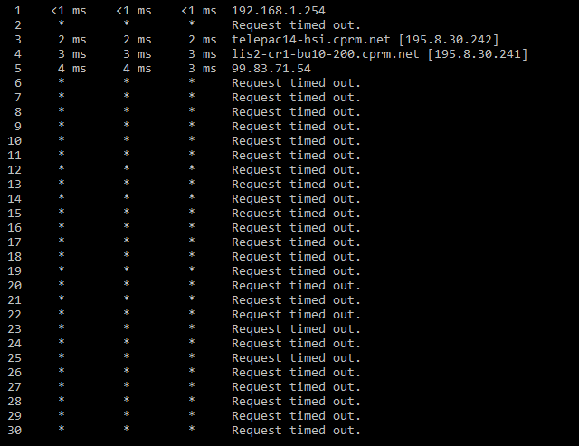
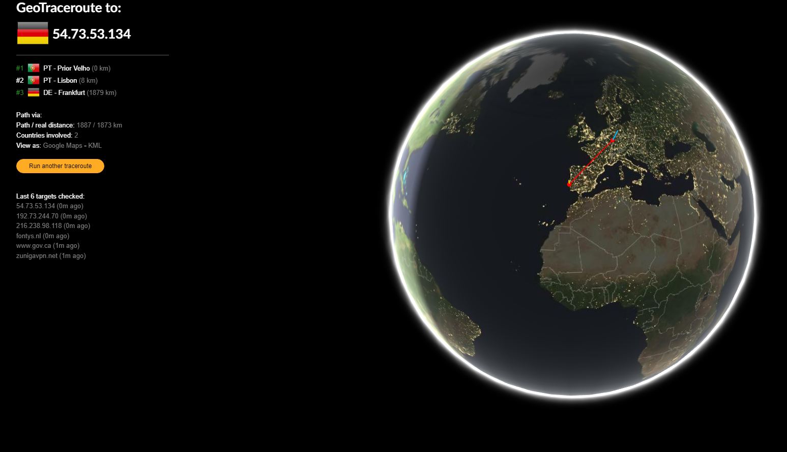
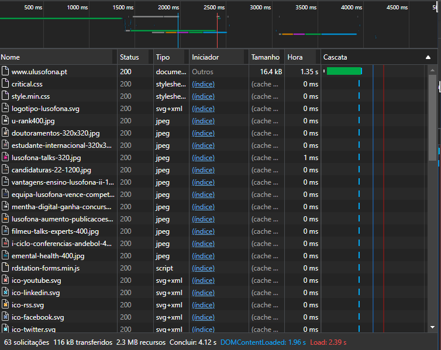
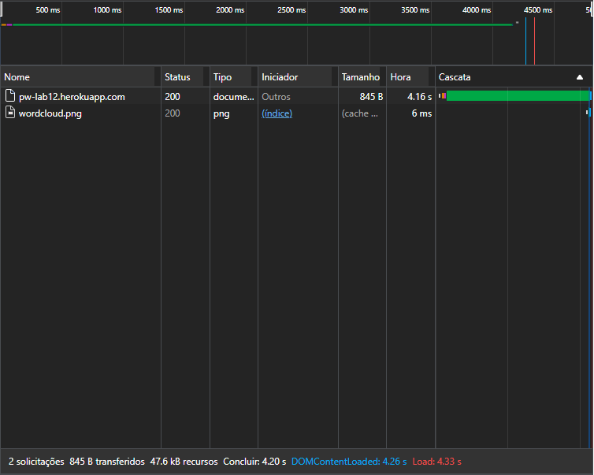
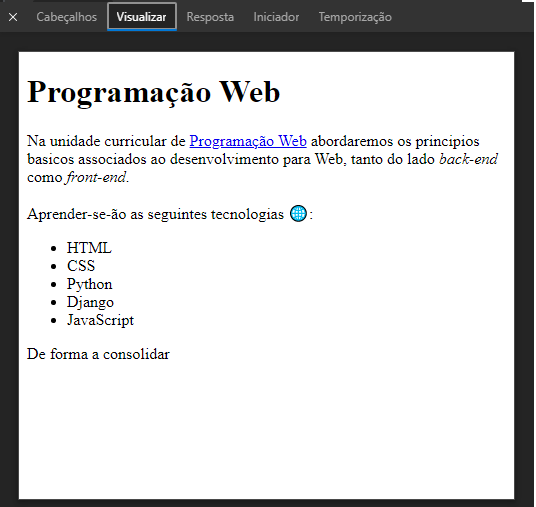
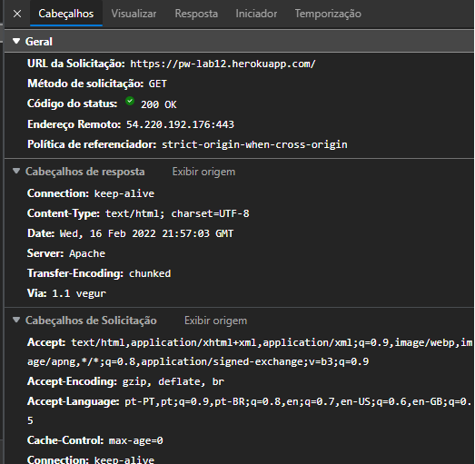
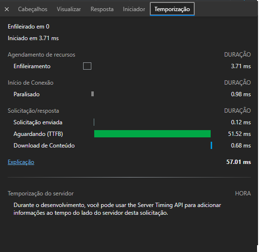

Programação Web A Internet e a Web
O comando Tracert é usado para determinar o caminho entre duas conexões. Neste caso é o caminho do nosso pc para o servidor que está a hospedar o site
O GeoTracer faz exatamente a mesma coisa mas dá para visualizar
Aqui está janela da rede da minha pagina
Aqui está janela da rede da pagina da Lusófona
Mostra visualmente a parte da pagina que está a ser carregada
Parece conter o comando HTTPS que foi executado com informação do que está a ser carregado
Duração que esta secção da pagina demora a ser executada
 Realizado por: Cláudio Costa.